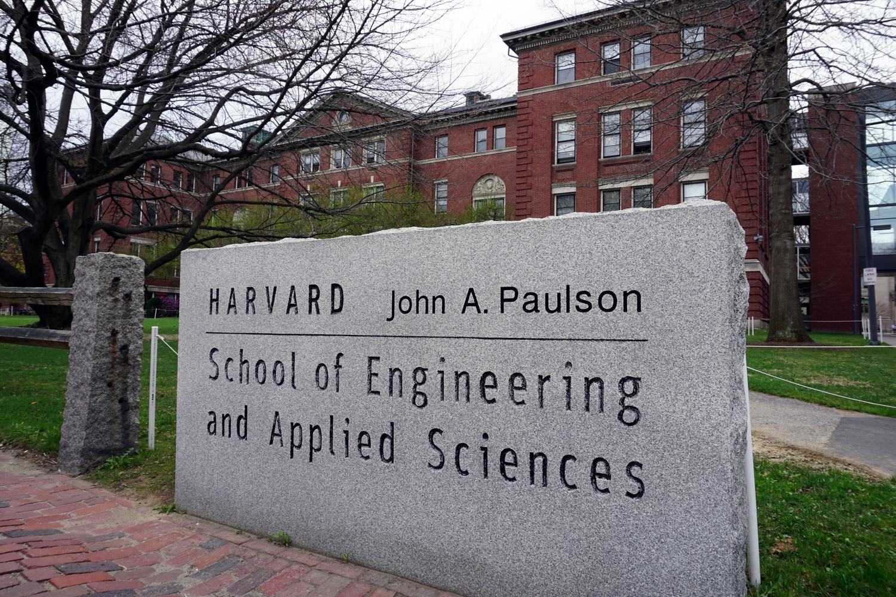
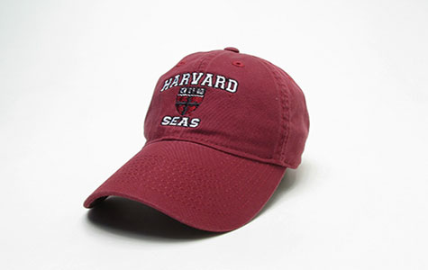

Working Towards Diversity, Inclusion and Belonging in Harvard SEAS
A CS171 Final Project by Jessica Edwards and Veronica Nutting
This project aims to visualize data in order to analyze representation and retention data within the School of Engineering and Applied Sciences at Harvard University. Understanding issues relating to DIB, especially in regards to representation in technology, is necessary for informed and effective policy-making. Displaying historical and present-day demographic breakdowns within concentrations and schools can be useful for identifying trends and making sense of the current situation.

SEAS: Historical Context
Harvard University has a long and noteworthy STEM history. From countless science Nobel Prizes to the Mark I computer first programmed by Lieutenant Grace Hopper among others, Harvard’s history is filled with major STEM contributions.
The following highlights from the timeline on the SEAS website give an overview of SEAS’ development since it was founded in 1847 as Harvard’s Lawrence Scientific School:
The following highlights from the timeline on the SEAS website give an overview of SEAS’ development since it was founded in 1847 as Harvard’s Lawrence Scientific School:
- 1901: Pierce Hall opened as the “home of applied physics and mathematics research and teaching at Harvard”
- 1906: Lawrence Scientific School is disbanded and merges into university
- 1919: Harvard reestablishes a “scientific school”, the Harvard Engineering School
- 1947: Harvard opens the nation’s first master’s program in computer science
- 1949: The Harvard Engineering School is reorganized and demoted from a full school at Harvard to a division within the Faculty of Arts and Sciences
- 2007: Harvard elevates the Division of Engineering and Applied Sciences to become a full-fledged school, the School of Engineering and Applied Sciences (SEAS)
- 2015: Harvard Business School alumnus John Paulson donated $400 million to SEAS, the largest gift ever received by Harvard. SEAS is renamed the Harvard John A. Paulson School of Engineering and Applied Sciences in his honor

Let’s take a look at gender in SEAS undergraduates in the past decade. Notice how interest in engineering and applied sciences has increased over the years based on number of students enrolled overall and number of concentrations.
To use this visualization, click on the play button to see how the department has grown and changed over time. You can also move the slider around to focus on a particular year.
A Decade of SEAS Undergrads
This visualization shows gender breakdown of declared SEAS concentrators from 2012-2018 (link to data)
Exploring the SEAS of Today
Now that we’ve learned about the creation and evolution of SEAS, we’ll explore the SEAS of today. SEAS is working hard to address global challenges and serve society, missions that it cannot achieve without a goal to promote diversity, inclusion, and belonging when building its community and societal problems it hopes to solve.
The first vision listed on SEAS’ website is focused on creating a diverse and inclusive community. In their vision for a “collaborative, tightly-knit community for scholars, educators and innovators,” SEAS hopes to be “a model for diversity and inclusion at Harvard and beyond.”
To execute this vision, SEAS has an Office of Diversity, Inclusion and Belonging that “provides strategic leadership, partnership, programs, and support toward the development, implementation, and ongoing evaluation of a Diversity, Inclusion, and Belonging Strategic Framework.”
The first vision listed on SEAS’ website is focused on creating a diverse and inclusive community. In their vision for a “collaborative, tightly-knit community for scholars, educators and innovators,” SEAS hopes to be “a model for diversity and inclusion at Harvard and beyond.”
To execute this vision, SEAS has an Office of Diversity, Inclusion and Belonging that “provides strategic leadership, partnership, programs, and support toward the development, implementation, and ongoing evaluation of a Diversity, Inclusion, and Belonging Strategic Framework.”

So let’s take a look at SEAS undergrads of today (as of 2018) broken down by race and gender to see if the current demographics of SEAS align with its mission and vision.
This sunburst visualization is broken up into Concentration (inner ring), Gender (middle ring), and Race (outer ring). Click on each ring to zoom in to find out more about a specific concentration, gender within a concentration, and race within a gender for a specific concentration. Click the colors on the legend to zoom into a specific concentration. Finally, click on the innermost circle to zoom out of the current setting.
Breakdown of SEAS Undergrads in 2018 by Concentration, Gender and Race
This visualization shows gender breakdown of concentrations, gender, and race of declared SEAS concentrators from 2018 (link to data).
You’ve likely noticed that many groups are still underrepresented in SEAS concentrations. But how striking of an issue is this?
We mentioned that SEAS hopes to be “a model for diversity and inclusion at Harvard and beyond.”
Thus we can better consider the situation of SEAS by zooming out and seeing how it compares to the Faculty of Arts and Sciences (FAS), which comprises the remaining concentrations offered within Harvard College.
We mentioned that SEAS hopes to be “a model for diversity and inclusion at Harvard and beyond.”
Thus we can better consider the situation of SEAS by zooming out and seeing how it compares to the Faculty of Arts and Sciences (FAS), which comprises the remaining concentrations offered within Harvard College.
Consider these slope line charts which directly compare demographics in Harvard SEAS with Harvard FAS using the demographics of undergraduate students in 2018. The slope chart on the left shows the racial breakdowns in SEAS versus FAS, while the slope chart on the right shows the gender breakdown.
SEAS vs FAS Slope Charts
You see that not everyone is equally represented in SEAS. But is that normal? Are other schools exhibiting similar numbers?
Consider Carnegie Mellon, a school’s whose percentage of male and female first-year students by year of enrollment shifted drastically from 26% female in 2010 to 50% female in 2018 (source). However, in terms of gender breakdown, similar institutions like Stanford have a 60% male to 40% female ratio for engineering and applied sciences majors, much like Harvard’s (source).
It is more difficult to find publicly available information on racial demographics for students pursuing degrees in engineering and applied sciences.
Consider Carnegie Mellon, a school’s whose percentage of male and female first-year students by year of enrollment shifted drastically from 26% female in 2010 to 50% female in 2018 (source). However, in terms of gender breakdown, similar institutions like Stanford have a 60% male to 40% female ratio for engineering and applied sciences majors, much like Harvard’s (source).
It is more difficult to find publicly available information on racial demographics for students pursuing degrees in engineering and applied sciences.
The SEAS We Are Working Towards
Now that we understand the SEAS of the past and of today, let’s look ahead. With amazing projects like Allston campus and a general cultural buzz over tech, it’s a generally exciting time to be thinking about STEM.
Indeed, we see that Harvard SEAS concentrations are growing. More and more students are concentrating in SEAS.
SEAS concentrators are currently about 20% of Harvard’s undergraduate student body (source).
Explore how different concentrations have grown over time.
SEAS vs Harvard College Concentrations Over Time
This displays degrees awarded per year per concentration.
As we’ve seen, interest and participation in SEAS has grown significantly at Harvard over the past decade. SEAS has adopted for this growth by hiring 50 new faculty members and building a host of new facilities.
In the coming years, the size of the SEAS community is projected to continue to grow, and Harvard is planning a significant expansion of the campus that will include state-of-the-art teaching and research facilities for SEAS. The 500,000+ square foot Science and Engineering Complex located in Allson plans to open in Fall 2020.
In the coming years, the size of the SEAS community is projected to continue to grow, and Harvard is planning a significant expansion of the campus that will include state-of-the-art teaching and research facilities for SEAS. The 500,000+ square foot Science and Engineering Complex located in Allson plans to open in Fall 2020.
Something exciting is happening.
Look at these stats from the Brief Profile of the Admitted Class of 2023.
We are in the right place at the right time to change and improve things.
Look at these stats from the Brief Profile of the Admitted Class of 2023.
We are in the right place at the right time to change and improve things.
Get Involved
Here are some resources to learn more about the actions SEAS is currently taking to work towards building a more diverse and inclusive community. These resources also extend to provide information about the demographics and opinions of non-undergraduate groups within SEAS.
Here’s a list of SEAS-affiliated student organizations that have historically supported efforts to encourage more women, minorities, and underrepresented students in STEM:
About Us
I’m Jessica and I’m a junior in Pfoho studying Computer Science with a secondary in Educational Studies. Besides currently serving on Women in Computer Science Advocacy Board, I have been involved in WiCS in the past as Outreach Director and through the WECode Conference’s Programming Team. Outside of WiCS, I’m involved in the Kuumba Singers of Harvard College and Harvard College Faith and Action.
Hello! My name is Veronica, and I’m a junior studying Computer Science with a Secondary in Government. Outside of the classroom, I work as a Course Assistant for CS50. I’m also on the Women in Computer Science Advocacy Council and involved in various Latinx groups (I’m half from West Virginia, half from Buenos Aires). I am also very interested in and committed to working on DIB issues at Harvard and beyond.
Data
Data from the American Society of Engineering Education and the Harvard Office of Institutional Research
Acknowledgements
Jess Eng and CS171 Teaching Staff
Joanne Kang
Alexis Stokes
Harvard Women in CS